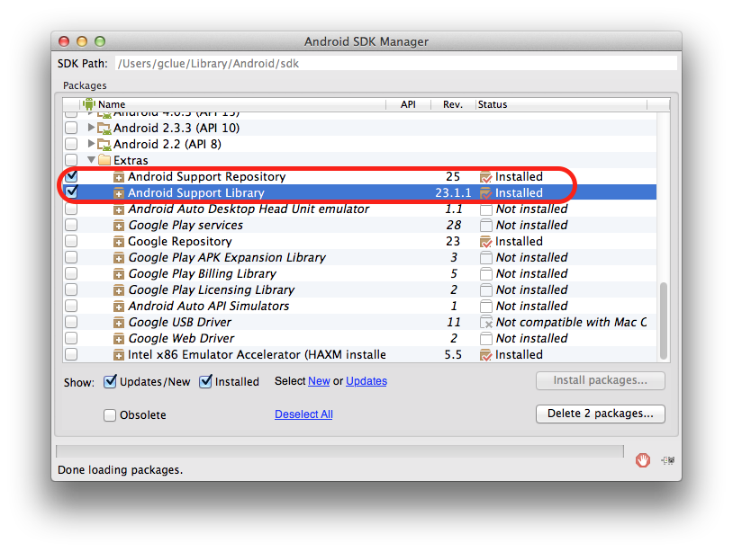

環境設定
JDKのインストール
下記のサイトより環境にあった「Java SE Development Kit 7u79」をダウンロードする。
http://www.oracle.com/technetwork/jp/java/javase/downloads/jdk7-downloads-1880260.html
ダウンロードしたファイルを実行し、インストールする。
なお、インストール時の設定は初期状態から変更せず行う。
Android Studioのインストール
Android Studioをダウンロードする。
https://developer.android.com/sdk/index.html
ダウンロードした、ファイルを実行する。

※インストール時、PC名やユーザ名に日本語やハイフンなどを使用している場合、「your project location contains non-ascii characters」というエラーメッセージが表示されることがあります。
その場合はパスに日本語が含まれない場所にフォルダを作成し、そちらを使用してすすめるようにしてください。
Macの場合、Android Studio 1.0のインストール画面が表示されるので、Android StudioアイコンをApplicationsにドラッグ&ドロップする。

/Applicationフォルダにインストールされる。

環境変数の設定
インストールしたJDKを探す場合に環境変数「JAVA_HOME」を使用する場合がある。
必要な場合は以下の手順で環境変数の設定を行う。
Windowsの場合
1.コントロールパネルを開く
2.システムを選択（表示されていない場合は表示形式を小さいアイコンに変更）
3.詳細設定タブの一番下にある「環境変数」ボタンを押下
4.システム環境変数に「JAVA_HOME」があるかを確認し、ある場合は変更、ない場合は新規を選択
5.変数名にJAVA_HOMEを設定し、変数値にJDKのバージョンが設定されているフォルダのパスを設定
6.設定が終わったら「OK」ボタンを押下
これで設定は完了です。
コマンドプロンプトにて、下記を入力後enterキー押下で設定したパス名が表示されれば成功です。
1 | |
Macの場合
Macの場合、JAVA_HOMEが設定されていない場合、下記のコマンドにて表示されたパスが設定されるので、そちらで取得できれば問題ない
1 | |
ADBドライバについて(Windowsのみ)
WindowsではAndroid端末をPCで認識させるためにADBドライバというものをインストールする必要があります。
ご利用の端末のメーカー、機種を確認し、対象のドライバをダウンロードして下さい。
下記に一部のメーカーについて記載します。
・NEC
「USBドライバ（Android 開発者向け含む）」から対象の機種を選択し、ダウンロード
http://www.n-keitai.com/guide/download/
・SHARP
http://k-tai.sharp.co.jp/support/developers/driver/
・Fujitsu
「ADB用USBドライバ」より対象の機種を選択し、ダウンロード
http://spf.fmworld.net/fujitsu/c/develop/sp/android/
・sony
http://developer.sonymobile.com/downloads/drivers/
・Google(Nexus)
「DOWNLOAD GOOGLE USB DRIVER」からダウンロード
http://developer.android.com/sdk/win-usb.html
一部の機種はこちらからインストールする必要があります。
http://www.samsung.com/us/support/downloads/SPH-M920ZKASPR
ダウンロードが終わったらAndroid端末をUSBケーブルにてPCと接続し、デバイスマネージャーを開きます。
ほかのデバイス（OSのバージョンによって異なる可能性あり）内に「Android ADB〜」というものが！マークがついた状態で表示されますので、これを選択し、ドライバの更新を行います。
ドライバの参照はコンピュータを参照とし、先ほどダウンロードしたフォルダを参照し、更新を行います。
Android SDKについて
設定されているSDKで不足しているものがある場合、SDK Managerよりインストールを行います。
Android Studioの上のメニューより、[Tools]->[Android]->[SDK Manager]を選択します。
画面中央の下にある「Launch Standalone SDK Manager」を選択します。

SDK Managerが表示されるのでここで必要なものをインストールして下さい。
なお、Android 7.0などの項目があり、デフォルトでチェックが付いた状態ではありますが、容量が大きいため、今回はチェックを外して下さい。

※Android.Supportファイルが見つからない場合の対処法
Android Studioインストール後、プログラム作成でAndroid.Supportファイルが見つからずエラーとなることがあります。
この場合、SDK Managerの最後の方にあるExtrasの「Android Support Repository」と「Android Support Library」を確認します。
ここが最新でない場合はまず最新にして下さい。
最新の状態でエラーとなる場合、一度削除し、再度インストールすることで正常に動作するようになる場合があります。
SourceTreeのインストール
SourceTreeをダウンロードする。 https://www.atlassian.com/ja/software/sourcetree/overview
ダウンロードしたdmgファイルを実行する。

SourceTreeのインストール画面がでるので、SourceTreeアイコンをドラック&ドロップする。